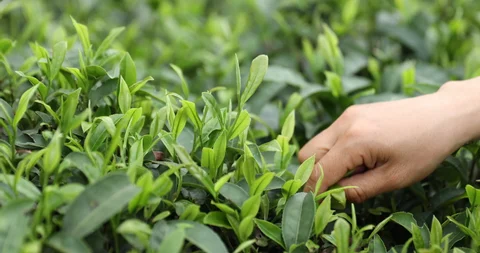
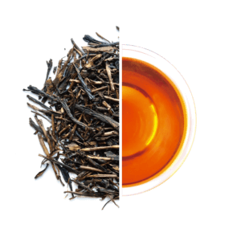
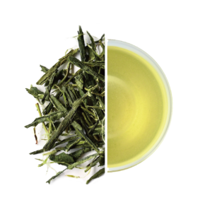
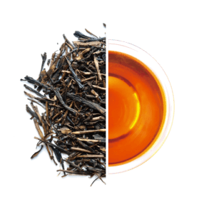
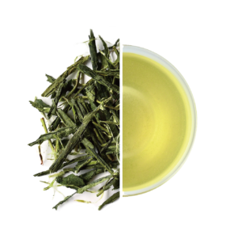
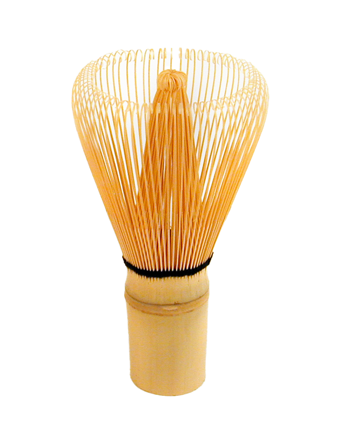
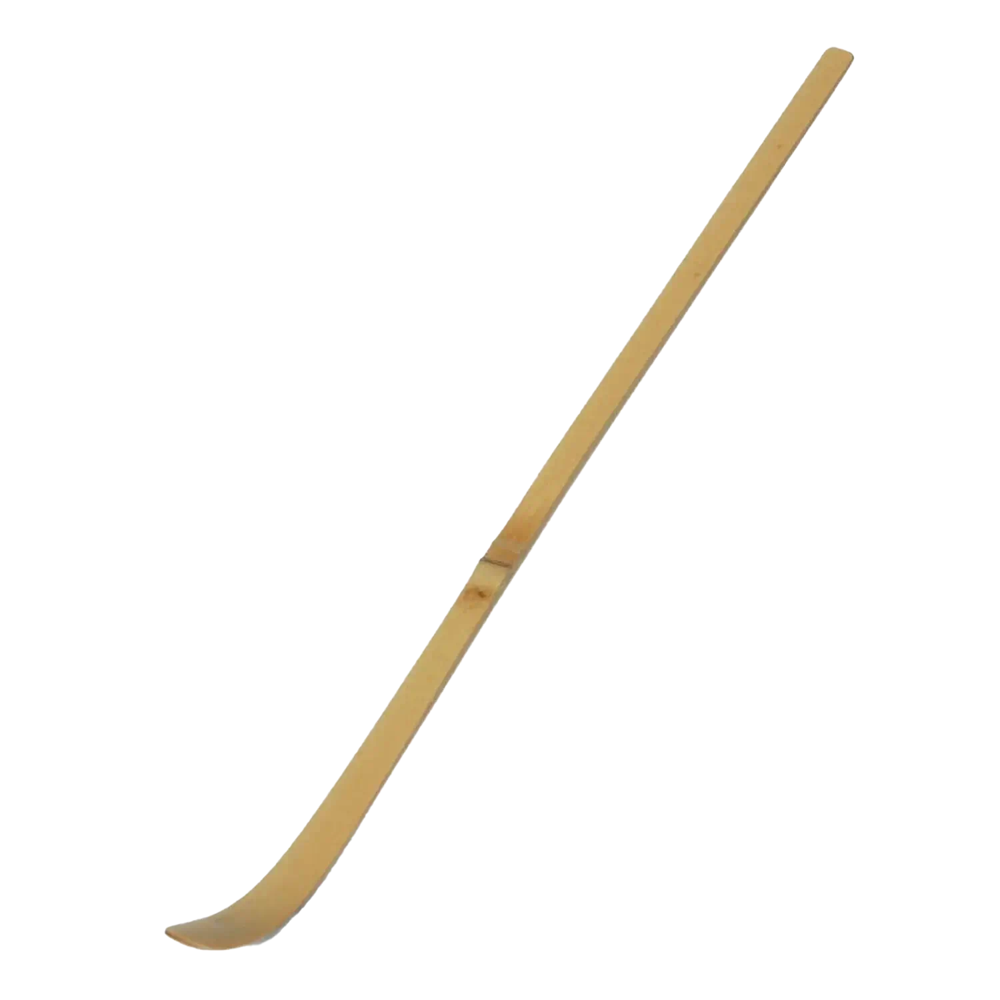
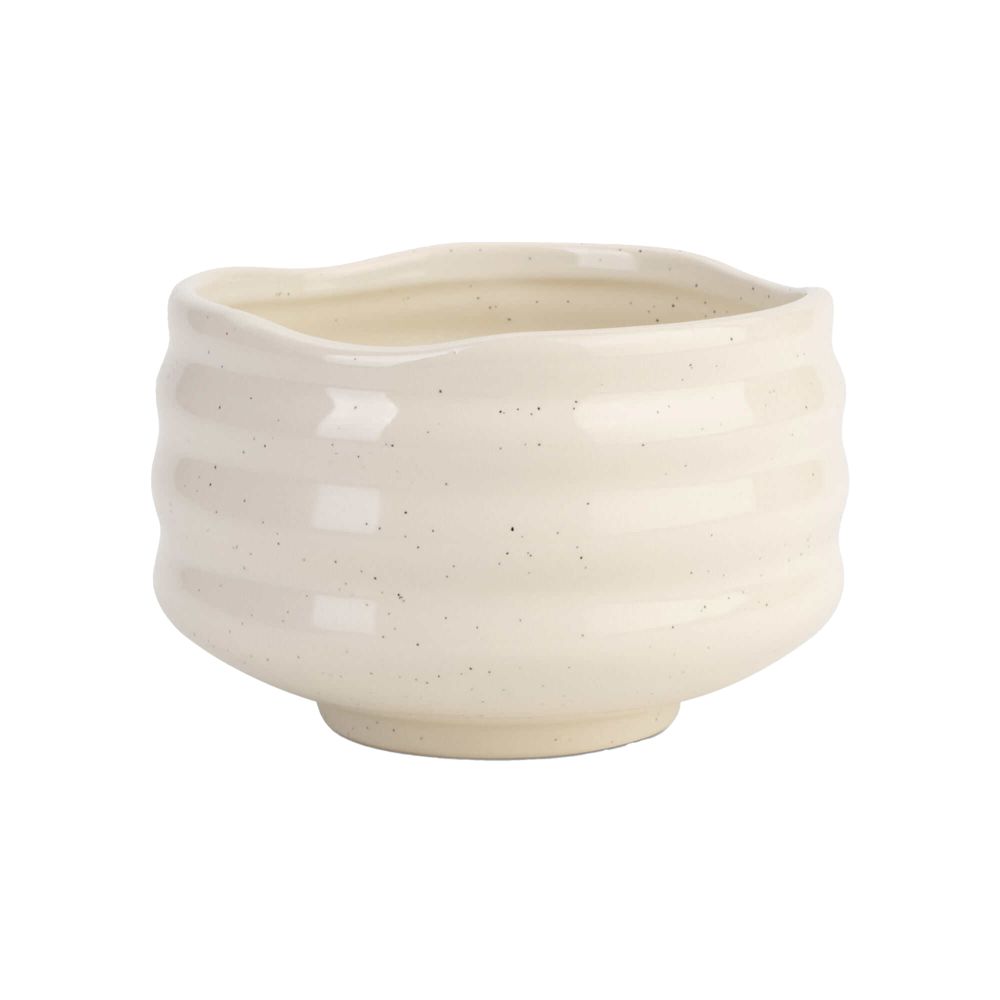

At Leaf & Whisk Matcha, we are dedicated to cultivating a
healthier, more sustainable world through the power of organic
matcha tea. Our mission is to source the highest quality, ethically
grown matcha from dedicated farmers who share our commitment to
organic practices and environmental stewardship. We strive to
inspire wellness and mindfulness in every cup, promoting the rich
cultural heritage of matcha while prioritizing the health of our
customers and the planet. Through education, transparency, and a
passion for quality, we aim to create a community that embraces the
art of matcha
and the benefits it brings to life. Every step of our process is
rooted in our dedication to purity and excellence. From carefully
selecting tea leaves to meticulous processing, we ensure that our
matcha retains its vibrant green color, rich flavor, and powerful
nutrients. Our organic certification guarantees that our products
are free from harmful chemicals and additives, allowing you to enjoy
matcha in its most natural form. We strive to cultivate a community
that values health, mindfulness, and sustainability. Through
education and engagement, we aim to inspire our customers to embrace
the benefits of matcha not just as a drink, but as a lifestyle.
Whether you’re new to matcha or a seasoned enthusiast, we provide
resources, recipes, and tips to help you incorporate matcha into
your daily routine.
At Leaf & Whisk Matcha, we are dedicated to cultivating a
healthier, more sustainable world through the power of organic
matcha tea. Our mission is to source the highest quality, ethically
grown matcha from dedicated farmers who share our commitment to
organic practices and environmental stewardship. We strive to
inspire wellness and mindfulness in every cup, promoting the rich
cultural heritage of matcha while prioritizing the health of our
customers and the planet. Through education, transparency, and a
passion for quality, we aim to create a community that embraces the
art of matcha
and the benefits it brings to life. Every step of our process is
rooted in our dedication to purity and excellence. From carefully
selecting tea leaves to meticulous processing, we ensure that our
matcha retains its vibrant green color, rich flavor, and powerful
nutrients. Our organic certification guarantees that our products
are free from harmful chemicals and additives, allowing you to enjoy
matcha in its most natural form. We strive to cultivate a community
that values health, mindfulness, and sustainability. Through
education and engagement, we aim to inspire our customers to embrace
the benefits of matcha not just as a drink, but as a lifestyle.
Whether you’re new to matcha or a seasoned enthusiast, we provide
resources, recipes, and tips to help you incorporate matcha into
your daily routine.
 Sustainability is at the heart of everything we do. We've proudly maintained our B Corps certification for the past six years. Our commitment begins with sourcing premium green tea leaves from organic farms that prioritize biodiversity and soil health. We work closely with local farmers who practice regenerative agriculture, ensuring that our tea is grown without harmful pesticides or fertilizers. Our production process is designed to minimize environmental impact. We use energy-efficient methods and invest in renewable energy sources, reducing our carbon footprint. All our packaging is 100% recyclable and made from biodegradable materials, reflecting our dedication to reducing plastic waste. Furthermore, we engage in fair trade practices, ensuring that our farmers receive fair compensation and support for their communities. Through initiatives like tree planting and water conservation projects, we actively contribute to the health of the ecosystems where our tea is grown.
Embrace the comforting blend of Genmaicha Green Tea, a delightful combination of Sencha and roasted brown rice. This unique tea offers a nutty, toasted flavor that beautifully complements the fresh green tea notes. With its low caffeine content, Genmaicha is perfect for afternoon relaxation or as a warm companion during cooler days.
Delight in the warm, roasted flavors of Hojicha Green Tea, crafted from roasted green tea leaves. This unique process gives hojicha its distinctive brown color and toasty aroma, resulting in a smooth, low-caffeine beverage that’s gentle on the palate. Perfect for winding down, hojicha is a soothing choice for any time of day.
Experience the ancient tradition of Matcha Green Tea, a finely ground powder made from shade-grown tea leaves. Rich in antioxidants, this ceremonial-grade matcha delivers a creamy, frothy texture with a deep, rich flavor profile. Ideal for whisking into lattes or smoothies.
Discover the refreshing essence of Sencha Green Tea, Japan's most popular green tea. Hand-picked from the lush hills of Shizuoka, this tea offers a vibrant green color and a delightful balance of sweetness and umami. With a smooth, grassy flavor and a hint of astringency, Sencha is perfect for everyday enjoyment, invigorating your senses with every sip.
 




A ceremonial-style matcha is like espresso: a concentrated, premium product enjoyed in smaller quantities. As such, you only need about ½ teaspoon of powdered tea (two scoops from the chashaku) in order to make a single serving. Sift your matcha into a small bowl to remove any clumps. Then add two ounces of water at 176°F. Whisk to fully dissolve and incorporate the powder and to give you a creamy, velvety, and foam-topped cup. Once you have the basics down, you can adjust the amount of powder to your taste preference.
The fundamental basics of ceremonial matcha involve four traditional tools. While preparation techniques have evolved to certain preferences, these items are the minimum needed to enhance matcha to its fullest.
| ITEM | NAME | USE | MATERIAL |
|---|---|---|---|
|  | Chasen (whisk) | creating froth | bamboo (traditional) or resin |
|  | Chashaku (tea scoop) | measuring and scooping powder into the chawan | bamboo |
|  | Chawan (tea bowl) | preparation and whisking | various |
| Sifter | removing clumps before whisking | stainless steel |
ENJOY A CURATED COLLECTION OF DRINKS AND CONFECTIONARIES AT OUR FIRST CAFE LOCATION